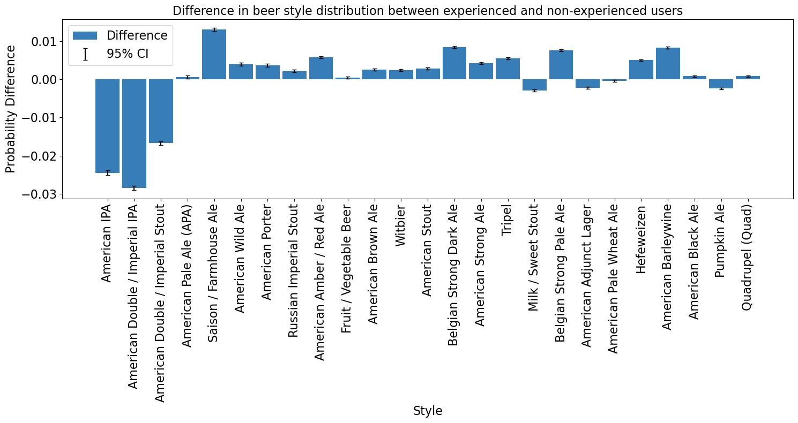

As we observed, experience seems to play a significant role in how, and particularly how well, individuals rate their beers. However, it is fair to question whether the total number of previous ratings is truly a perfect measure of a user's experience. While it certainly provides a useful indication and is a legitimate estimator, we wondered if there might be a more sophisticated way to identify experienced users.
As humans, we can often tell whether someone knows what they are talking or writing about, especially when we ourselves have expertise in the subject. This suggests that it might be possible to infer a type of "experience level" from the text of reviews. There are numerous resources on how to describe beer, and for "beer sommeliers," there are even specific guidelines on how to assess and articulate beer characteristics.
We therefore created a list of these words that are most likely to be used by people that know quite a lot about beer. We then split the users into two groups: The experienced and the inexperienced users.
Experienced users are those that:
With this definition in place, we are able to proceed with further analyses based on this experience-based classification.

We can see, that just 6.4% of the users are considered expert users with this metric. On the other hand more than two thirds of all the ratings are written by these users. This means that most of the ratings on the platform are written by a small fraction of the users with a consistent interest in beer. Concerning their rating behavior, in the middle plot we can see that there is a slight difference, as experienced users rate 0.1 points worse on average. But we have to investigate further in this.
We can make a more in-depth analysis by calculating statistics for both groups for every beer style individually. Like that we could see, whether there are beer styles that are "beginner-friendly" or which grow on you with time but might not suit your taste when you first try them. In the following plot we first show what proportion of ratings of each group which beer styles make up.
In the plot the beer styles are ordered by the total number of ratings for that style, meaning that "American IPA" is the beer styles which the most ratings are about. We can already learn quite a lot from this plot. Interestingly, the only 3 beer styles that make up a clearly larger proportion of the ratings among inexperienced users are also the 3 beer styles that are generally rated the highest. This means that particularly popular beers are even more popular among inexperienced beer users than among experienced beer users. This also makes sense, because if you are just starting to get interested in beer, you are unlikely to start with a specialty beer, but rather drink a beer that is available in the supermarket. Conversely, the difference for all other beers is either negligible or the beer style makes up a larger proportion of the experienced raters than the inexperienced ones. This gives us some confidence that the word metric we have established seems to correspond to our natural understanding of “experience”. But let us now turn to the mean rating. Just as we showed the difference in the proportions between the two groups in the previous plot, we will now show the difference in the mean rating between the two groups for the beer styles.

This plot provides perhaps the most interesting insight so far. We find that experienced users rate almost all beer styles lower on average than inexperienced drinkers, with the exceptions of "Witbier" and "American Adjunct Lager." This suggests that with greater experience, drinkers tend to have higher standards for their beers. Thus, when reading a review from an inexperienced versus an experienced beer drinker for the same beer, one should consider this potential bias in shaping expectations or assessments.
We already observed this difference in average ratings at the beginning when we calculated the overall average rating across all beer styles. Now, however, we can see the breakdown by each individual beer style. This additional information can help us better account for rating bias when assessing a particular review.
Another factor that can enter into the user's evaluation as a bias is the country from which he or the beer comes. It is hard to deny that the nationality and culture of the country of origin can have a major influence on the evaluation of any cultural asset - and beer is a foodstuff and therefore also a cultural asset. So it could be that ratings from users from more wine-oriented countries such as France and Italy are different to those from more beer-oriented countries such as the northern European states. So let's start with a simple analysis and look at the average rating of users from a particular country.
We can already observe some interesting things here. For example, we can see that the countries whose users tend to give critical ratings on average are largely located in Europe. If we zoom in a little closer to Central Europe, we can see that countries such as Germany, Denmark and the Czech Republic, where beer culture has always been very pronounced, tend to give more critical ratings on average.
Interestingly, this contrasts with the average scores of southern European countries traditionally associated with wine, such as Italy, Greece, Spain and, to a certain extent, France. Here we see very good average scores. This could potentially be linked back to the analysis of experienced and inexperienced beer drinkers, where we have already established that greater exposure to beer tends to lead to lower average scores rather than better ones.
Although this basic analysis has already produced interesting results, it is worth going into more depth, especially on the subject of patriotism: “Do users from countries with a strong sense of national pride rate beer from their own country better than beer from abroad? Are there certain beer-loving countries that give themselves particularly high marks? Or are there countries that find beer from certain other countries particularly bad?
To answer these questions, we divide the ratings into two groups: those about domestic beer and those about foreign beer. A rating belongs to the former group if the country of the brewery of the beer matches that of the user. In a first analysis, we first look at the proportions of domestic beer and foreign beer in the data set, both in general and grouped by country.
We find that the distribution of ratings between foreign and domestic beers is fairly balanced (roughly 46%-54%). This is generally quite good because it allows us to make statements about both groups based on a substantial amount of data.
However, we also see that this is also due to the fact that we treat the USA as one country while we treat all European countries (which would only form a similarly large economic area as the USA if they were together) individually. This is because foreign beer dominates the ratings in almost all countries. In a few European countries with a pronounced beer culture, such as Germany, Poland, Belgium and England, it is around 50/50. The big outlier here, however, is the USA, where around 80% of the ratings are for domestic beer. As already mentioned, one of the reasons for this is that we also consider beer to be domestic if it comes from a different US state than the user rating it. We will therefore later devote ourselves to an in-depth analysis of the USA in order to further examine this substantial part of our data.
Now, however, we don’t just want to look at the number of ratings but rather focus on the bias in the ratings themselves. In the following plot, we see the differences between the average rating for domestic beers and foreign beers by users from the country shown on the x-axis.

We observe some noticeable differences here. For instance, residents of New Zealand rate their own beers on average 0.2 points higher than those from outside New Zealand. The USA also rates its own beers on average more than 0.1 points higher than foreign beers. We can also see that the top 4 countries—New Zealand, the Czech Republic, Ireland, and the USA—all rate their own beer more than 0.1 points higher than foreign beer, and these are all countries with a strong sense of national pride.
On the other side of the spectrum, we initially find some more extreme values, such as in Malaysia, where users rate their own beers on average more than a whole point lower. However, we cannot consider these values truly interpretable, as they are based on very small data sets. This is also indicated by the very large confidence intervals.
Still, we find some interesting results here as well if we take the confidence intervals into account and ignore the very extremes. For instance, let’s look at Greece. In a previous analysis, we already found that users from Greece generally give a very high average rating across all their reviews. Additionally, the data set for users from Greece isn’t particularly small. Now, with this plot, we can observe that users from Greece rate their own beer on average almost 0.4 points lower than foreign beer. This is certainly interesting and should be considered when reading a review from Greece, whether it’s for a Greek beer or a foreign one.
Last but not least, we wanted to know the user-country-brewery-country pair that gives the best and the worst average ratings. We set a threshold requiring at least 1,000 reviews for each combination; otherwise, it’s considered non-representative. Click on the graphics to see, which countries love/hate which others beers.
Next we look at whether the time of year, the season, has any influence on ratings. We grouped the ratings into months, as a less fine grained division into quarters would be very ingranular, and not enable us to see how trends develop as the year progresses, while a grouping into weeks or days would produce a lot of data and big dataframes. Let's first explore, if the time of year leads to a general rating "high" or "low", for example reviewers being more satisfied with their beer in the summer rather than the winter.
We see that the average ratings do not change with the month, at least not significantly, thus the hypothesis that the time of year has a general effect on the ratings in total does not hold, rather the results are kind of boring. However, lets also have a look at how the beers get rated throughut the year depending on the beer style.
Before we analyse the rating, let's first check which beer is a "summery" beer and which beers are "wintery", by comparing the amount of each reviewed by month. The graph below filters out beer styles which do not show a difference of at least 14 ranks throughout the entire year, in order to not crowd the graph with straight and uninteresting lines. The value of 14 was chosen as it offers a nice balance between not hiding important data and now not crowding the graph. The function also removes beer styles which have less than 500 reviews for at least one month, in order to not flood the analysis with beers which have few reviews, where the change in review count might not be significant.
Beers such as: